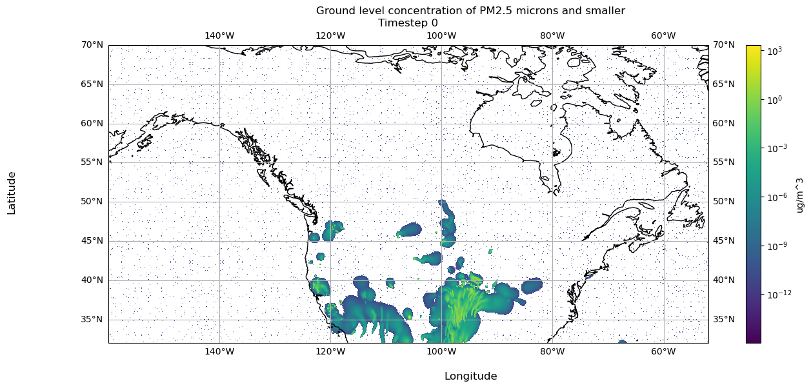
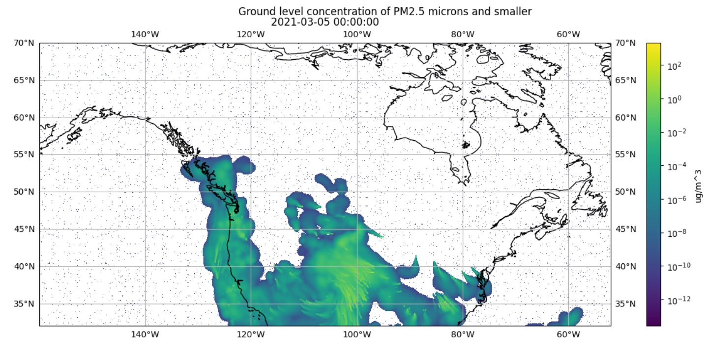
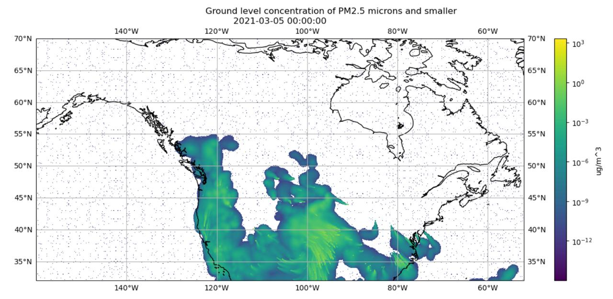

So far, we have established what the data from UBC is and how to download it to our machine. Now we describe how to compile the data on our machine into an IDX file using the OpenViSUS libary and its access to the PIDX library.
6.1 On Data Validation
We decided to perform data validation after conversion to the IDX file format. However, we realized that performing data validation both before and after conversion would be best. This is explored further in Chapter 7.
For now, the reader should understand that data validation of the NetCDF files is different from data validation of the IDX file. In this chapter, we use the assumption that the NetCDF files we can open have complete and uncorrupted data for conversion to IDX.
6.2 Overview
For all our conversion script versions, the same general process is followed:
Check which NetCDF files were successfully downloaded from the data source by attempting to open each downloaded file with xarray.
Obtain a subset of data from the files to create a dataset of chronological, hour by hour, data.
Save this time series data to an IDX file using the OpenVisus framework.
We will describe the latest version of our conversion, version 4. Throughout, we will explain how previous attempts were deficient.
To see previous attemps in their entirety, refer to the side bar. Please note that the previous scripts were working scripts, therefore they may be incomplete.
6.3 Setting System Directories
First we set the directory paths we want to use during the conversion process, which is to our 4 directories of NetCDF files for each forecast ID.
Establish the directory where all forecast ID NetCDFs are stored and where to save our IDX file on the ‘atlantis’ machine.
2
Define the forecast IDs and dates we will loop over.
6.3.1 Rationale and Future Improvements
6.3.1.1 Data Usage
In versions 1 and 2 of our conversion attempt, we did not use all four sets of forecast ID files. We only used BSC12CA12-01 files to compile a single dataset. We learned that by not using all four sets of data, the dataset we created was less accurate. See Chapter 7 for further details.
Therefore we decided to use all four datasets, see Section 6.6 for details. We elect to use dates up to June 27, 2024 as this was the last time we ran our scripts. We have yet to address the issue of how to keep the IDX file constantly up to date with data available up to the present day.
6.4 Checking the NetCDF Files
Recall we downloaded all NetCDF files available from UBC onto our machine in their respective directories as follows:
Here, we identify which NetCDF files for each forecast ID successfully open with xarray and store them in a dictionary.
We also confirm the following conditions we established in Chapter 4 by using dictionaries to track the max values and unique values of these attributes across all files:
All files across all four forecast IDs have the same NROWS, XORIG, YORIG, XCELL, YCELL values.
Some files have either NCOLS = 1041 or NCOLS = 1081, but always NROWS = 381.
Code
import osimport xarray as xrimport numpy as npimport tqdmsuccessful_files = {id_: [] for id_ in ids}max_ncols = {id_: 0for id_ in ids}max_nrows = {id_: 0for id_ in ids}ncols = {id_: set() for id_ in ids}nrows = {id_: set() for id_ in ids}max_grid_x = {id_: {"xorig": 0.0, "xcell": 0.0} for id_ in ids}max_grid_y = {id_: {"yorig": 0.0, "ycell": 0.0} for id_ in ids}xorigs = {id_: set() for id_ in ids}xcells = {id_: set() for id_ in ids}yorigs = {id_: set() for id_ in ids}ycells = {id_: set() for id_ in ids}for id_ in ids: file_names = os.listdir(f"{firesmoke_dir}/{id_}/")forfilein tqdm(file_names): path =f"{firesmoke_dir}/{id_}/{file}"try: ds = xr.open_dataset(path) successful_files[id_].append(file) max_ncols[id_] =max(max_ncols[id_], ds.NCOLS) max_nrows[id_] =max(max_nrows[id_], ds.NROWS) max_grid_x[id_]["xorig"] =max(max_grid_x[id_]["xorig"], ds.XORIG, key=abs) max_grid_y[id_]["yorig"] =max(max_grid_y[id_]["yorig"], ds.YORIG, key=abs) max_grid_x[id_]["xcell"] =max(max_grid_x[id_]["xcell"], ds.XCELL, key=abs) max_grid_y[id_]["ycell"] =max( max_grid_y[id_]["ycell"], ds.YCELL, key=abs ) ncols[id_].add(ds.NCOLS) nrows[id_].add(ds.NROWS) xorigs[id_].add(ds.XORIG) yorigs[id_].add(ds.YORIG) xcells[id_].add(ds.XCELL) ycells[id_].add(ds.YCELL)except:continuefor id_ in successful_files: successful_files[id_] = np.sort(successful_files[id_]).tolist()
1
Initialize a dictionary to hold an empty list for each forecast ID. We update it with the file names that successfully open under the forecast ID directory.
2
Initialize dictionaries to hold an integer for each forecast ID. We update it to hold the maximum NCOLS/NROWS value available within forecast ID’s set of NetCDF files.
3
Initialize dictionaries to hold a set for each forecast ID. We update the set to hold all the unique NCOLS/NROWS values available within the forecast ID’s set of NetCDF files.
4
Initialize dictionaries to hold a dictionary of xorig/yorig and xcell/ycell values for each forecast ID. We update it to hold the maximum xorig/yorig and xcell/ycell pairs available within the forecast ID’s set of NetCDF files.
5
Initialize dictionaries to track unique xorig/yorig and xcell/ycell values.
6
For each forecast ID, we populate the dictionaries above.
7
Obtain a list of file names under the directory for id_. We loop through each file next.
8
Begin loop over each file. Note tqdm is just an accessory for generating a visible status bar in our Jupyter Notebook.
9
Obtain absolute path name to current file.
10
Here we use a try statement since opening the file with xarray may lead to an error. except allows us to catch the exception accordingly and continue trying to open each file.
11
At this line, the file opened without issue in xarray, so append this file name to the id_ list in the successful_files dictionary.
12
Use max to save the largest values in our dictionaries accordingly.
13
Update the dictionaries of sets with the file’s attributes, to ensure we catch all unique values.
14
If the file did not open during the try continue to the next file.
15
Sort the lists of successfully opened files by name, so they are in chronological order.
dataset: BSC18CA12-01
Number of successful files: 1010
Max cell sizes: max_ncols = 1081 and max_nrows = 381
Max xorig & xcell: {'xorig': -160.0, 'xcell': 0.10000000149011612}
Max yorig & ycell: {'yorig': 32.0, 'ycell': 0.10000000149011612}
ncols: {1081, 1041}
nrows: {381}
xorigs: {-160.0, -156.0}
yorigs: {32.0}
xcells: {0.10000000149011612}
ycells: {0.10000000149011612}
dataset: BSC00CA12-01
Number of successful files: 1067
Max cell sizes: max_ncols = 1081 and max_nrows = 381
Max xorig & xcell: {'xorig': -160.0, 'xcell': 0.10000000149011612}
Max yorig & ycell: {'yorig': 32.0, 'ycell': 0.10000000149011612}
ncols: {1081, 1041}
nrows: {381}
xorigs: {-160.0, -156.0}
yorigs: {32.0}
xcells: {0.10000000149011612}
ycells: {0.10000000149011612}
dataset: BSC06CA12-01
Number of successful files: 997
Max cell sizes: max_ncols = 1081 and max_nrows = 381
Max xorig & xcell: {'xorig': -160.0, 'xcell': 0.10000000149011612}
Max yorig & ycell: {'yorig': 32.0, 'ycell': 0.10000000149011612}
ncols: {1081, 1041}
nrows: {381}
xorigs: {-160.0, -156.0}
yorigs: {32.0}
xcells: {0.10000000149011612}
ycells: {0.10000000149011612}
dataset: BSC12CA12-01
Number of successful files: 1003
Max cell sizes: max_ncols = 1081 and max_nrows = 381
Max xorig & xcell: {'xorig': -160.0, 'xcell': 0.10000000149011612}
Max yorig & ycell: {'yorig': 32.0, 'ycell': 0.10000000149011612}
ncols: {1081, 1041}
nrows: {381}
xorigs: {-160.0, -156.0}
yorigs: {32.0}
xcells: {0.10000000149011612}
ycells: {0.10000000149011612}
6.4.1 Rationale and Future Improvements
6.4.1.1 Unloadable Files
On our first attempt to convert the data we discovered that various files failed to open. Therefore, we used a dictionary to keep track of which files successfully open.
6.4.1.2 Varying Grid Size
In this step we collect attribute information about the two different grids used in the dataset. We proceed to use these attributes to resample the grids accordingly, see Section 6.5.
6.4.1.3 Optimization and Scaling
One improvement to this step is to stop tracking maxes and unique values seperately. Instead, we could just track unique values then get maxes from there. Furthermore, modularizing this process such that it handles the possibility of new grids being used in the dataset would make the conversion script more scalable.
6.5 Preparing Resampling Grids
Now that we have the sets of openable files, we begin to handle the need to resample data. To resample arrays of shape 381×1041 to 381×1081, we use the SciPy griddata function from the interpolate package. This function gives interpolated values on set of points xi from a set of points with corresponding values. We refer the reader to SciPy’s documentation for details.
In this step, we obtain the grids we wish to use as our points and xi. See Section 6.5.2 for how we use these grids with the griddata function.
6.5.1 Generate Grids of Latitude and Longitude Points
Recall we can generate a set of latitude and longitude coordinates by using the attributes given in each NetCDF file, see Section 4.3.3 for an example. Here we generate two sets of latitude and longitude coordinates for each grid size.
Get the x/y origin and cell size parameters for the big 381×1081 grid.
2
Generate one two lists, defining a grid of latitudes and longitudes.
3
Using big_lon and big_lat, use meshgrid to generate our 381×1081 set of longitudes and latitudes.
4
Open a file that uses the small 381×1041 grid. Then, use the attributes in that file to generate two lists defining a grid of latitudes and longitudes.
5
Using sml_lon and sml_lat, use meshgrid to generate our 381×1041 set of longitudes and latitudes.
See below for an example of using these latitude and longitude grids to resample data on a 381×1041 grid to a 381×1081 grid.
6.5.2 Example with griddata
Now that we have the two sets of latitude and longitude points, we show an example of how these are used to resample an array of data from a 381×1041 grid to a 381×1081 grid.
In this example we use the latitude and longitude points generated from the attributes determine across all NetCDF files.
Create a meshgrid of points using the large longitude and latitude arrays.
8
Create a flattened array of tuples representing the large grid points.
9
Open the small dataset using xarray.
10
Create an array for the small longitude grid.
11
Create an array for the small latitude grid.
12
Create a meshgrid of points using the small longitude and latitude arrays.
13
Create a flattened array of tuples representing the small grid points.
Code
print(f'Using the large grid, we have {np.shape(big_tups)[0]} lat/lon points to sample on.')print(f'Using the small grid, we have {np.shape(sml_tups)[0]} lat/lon points to sample from.')
Using the large grid, we have 411861 lat/lon points to sample on.
Using the small grid, we have 396621 lat/lon points to sample from.
Let’s get the data at timestep 0 inside dispersion_20210304.nc, which uses a grid of size 381×1041.
Code
timestep =0vals = np.squeeze(sml_ds['PM25'].values)print(f'The shape of the PM25 array at timestep {timestep} is {np.shape(vals[timestep])}')
The shape of the PM25 array at timestep 0 is (381, 1041)
We use the following parameters with griddata to resample vals:
method: cubic, 2D: Return the value determined from a piecewise cubic, continuously differentiable (C1), and approximately curvature-minimizing polynomial surface.
fill_value: Value used to fill in for requested points outside of the convex hull of the input points.
The values for the grid we want to sample from, flattened into a 1D array.
3
The points we want to sample to.
4
The interpolation method used (‘cubic’ in this case).
5
The fill value to use (0 instead of NaN).
6
Perform the interpolation.
7
Print the number of points interpolated.
We have interpolated 381×1081 = 411861 points.
Notice that we have interpolated values that are negative.
Code
print(f'The minimum PM25 value in our interpolated values is {np.min(arr)}')
The minimum PM25 value in our interpolated values is -0.0004518490243624799
We change values less than our specified threshold to 0. We then reshape the values to be 381×1081 and make all the values of type float32, as this number type is used in the original NetCDF file for PM25 values.
Code
arr[arr <1e-15] =0arr = arr.reshape((len(big_lat), len(big_lon)))arr = arr.astype(np.float32)print(f'The shape of the resampled PM25 array at timestep {timestep} is {np.shape(arr)}')
1
Any values that are less than a given threshold, make it 0.
2
Reshape the result to match the new grid shape.
3
Cast number to float32.
4
Print the shape of the resampled PM25 array at the given timestep.
The shape of the resampled PM25 array at timestep 0 is (381, 1081)
Now we can visualize the resampled values:
Code
import matplotlib.pyplot as pltimport cartopy.crs as ccrsmy_fig, my_plt = plt.subplots(figsize=(15, 6), subplot_kw=dict(projection=ccrs.PlateCarree()))my_norm ="log"my_extent = [np.min(big_lon), np.max(big_lon), np.min(big_lat), np.max(big_lat)]my_aspect ='auto'my_origin ='lower'my_cmap ='viridis'plot = my_plt.imshow(arr, norm=my_norm, extent=my_extent, aspect=my_aspect, origin=my_origin, cmap=my_cmap)my_plt.coastlines()my_plt.gridlines(draw_labels=True)my_fig.colorbar(plot, location='right', label='ug/m^3')my_fig.supxlabel('Longitude')my_fig.supylabel('Latitude')my_fig.suptitle('Ground level concentration of PM2.5 microns and smaller')my_plt.set_title(f'Timestep {timestep}')plt.show()
1
Initialize a figure and plot, so we can customize figure and plot of data.
2
Color PM25 values on a log scale, since values are small.
3
This will number our x and y axes based on the longitude latitude range.
4
Ensure the aspect ratio of our plot fits all data, matplotlib can do this automatically.
5
Tell matplotlib our origin is the lower-left corner.
6
Select a colormap for our plot and the color bar on the right.
7
Create our plot using imshow.
8
Draw coastlines.
9
Draw latitude longitude lines.
10
Add a colorbar to our figure, based on the plot we just made above.
11
Set x axis label on our ax.
12
Set y axis label on our ax.
13
Set title of our figure.
14
Set title of our plot as the timestamp of our data.
15
Show the resulting visualization.

6.5.3 Rationale and Future Improvements
6.5.3.1 Discovering Varying Grids
We discovered the two grid shapes in version 1 of our conversion script. We found this after noticing the smoke data visualizations were nonsensical.
For example, the visualizations showed smoke eminating from the ocean, as shown in Figure 6.1.

(a) Plotting Data from 381×1041 Grid on 381×1081 Grid

(b) Plotting Data Resampled from 381×1041 Grid onto 381×1081 Grid
Figure 6.1: Visualization of Timestamp March 5, 2021 00:00:00 using IDX file Created in Conversion Script Version 1
For further details on how we investigated this issue, see Chapter 7.
6.5.3.2 Handling Various Grids
We considered various approaches to handling the fact that the data was on a 381×1041 grid or 381×1081 grid.
Table 6.1: The Weaknesses of Approaches to Handling Varying Array Sizes
Approach
Weakness
Exclude arrays with 1041 columns.
Throwing away those data points would discard all the information they hold.
Force data with 1041 columns into an array with 1081 columns without resampling.
This results in unused columns within the 1081-column array, leading to discontinuities and potential artifacts in the data representation.
Crop arrays on 1081 columns to 1041 columns
Cropping the data would result in loss of information.
The approach we chose was to resample the data with 1041 columns to arrays with 1081 columns. This produced the most visually appealing result and preserved the most information possible.
6.5.3.3 Scaling
One future improvement is to generalize precomputing additional grids if in the future the smoke forecasts change their grid size again. As of now we manually compute points for the 2 grid sizes.
6.6 Sequencing of NetCDF Files
At this point we have the lists of openable files and our resampling grids. Now we will determine which files to use and in what order.
The unique challenge of UBC’s short term dataset is that the forecasts overlap, creating staggered predictions as shown in Section 4.4.2. Additionally, there are often missing files or data points. In the following sections we show how we use the data given these factors.
6.6.1 Hourly Data per Forecast ID Dictionary
Recall that within each set of Forecast ID files, some files failed to download or open. Therefore, we check exactly what set of hours are available in each collection of forecast ID NetCDF files and store that information in a dictionary.
Below you can see the first few entries of this dictionary:
To generate this dictionary, we did the following:
Code
id_sets = {id_: {} for id_ in ids}for id_ in ids:forfilein tqdm(successful_files[id_]): path =f"{firesmoke_dir}/{id_}/{file}" ds = xr.open_dataset(path)for h inrange(ds.sizes["TSTEP"]): id_sets[id_][(file, parse_tflag(ds["TFLAG"].values[h][0]))] = h
1
Initialize a dictionary for each forecast ID.
2
For all successfully opened files per forecast ID.
3
Build path string to the file.
4
Open the file with xarray.
5
For every time step, get the dictionary at key id_. Then, add a key, value pair. The key is a tuple with the current file name and the TFLAG at h parsed with parse_tflag. The value is the index h.
Now that we have an indexable set of all available hours for each forecast ID, we can generate the sequence to choose the best predictions for every time step.
6.6.2 Utility Functions
Recall that for each timestep, there are various predictions available as shown in Section 4.4.2.
The following utility functions encode the logic used for selecting the most accurate PM2.5 prediction per time step. Most accurate means, the prediction produced by the forecast run as close as possible to the time step of interest.
Code
def prev_id(curr_id, verbose):""" Return the string of the previous dataset ID to use based on the current ID. 'Previous' means, last most recently updated forecast before curr_id. Details on forecast update time can be found here: https://firesmoke.ca/forecasts/ Listed in order: ["BSC18CA12-01", "BSC00CA12-01", "BSC06CA12-01", "BSC12CA12-01"] :param string curr_id: the ID used: :param boolean verbose: whether to enable print statements for debugging: """ ret =""if curr_id =="BSC18CA12-01": ret ="BSC12CA12-01"if curr_id =="BSC00CA12-01": ret ="BSC18CA12-01"if curr_id =="BSC06CA12-01": ret ="BSC00CA12-01"if curr_id =="BSC12CA12-01": ret ="BSC06CA12-01"if verbose:print(f"prev_id({curr_id}) = {ret}")return ret
Code
def get_id_from_date(date, verbose):""" Return the string of the dataset ID to use based on the date and hour given. We aim to use the dataset that provides the latest forecast update available for the hour. Details on forecast update time can be found here: https://firesmoke.ca/forecasts/ :param datetime date: pandas timestamp of the YYYYMMDD 00:00:00 date: :param boolean verbose: whether to enable print statements for debugging: """ ret =""if date <= date.replace(hour=2): ret ="BSC12CA12-01"if date >= date.replace(hour=3) and date <= date.replace(hour=8): ret ="BSC18CA12-01"if date >= date.replace(hour=9) and date <= date.replace(hour=14): ret ="BSC00CA12-01"if date >= date.replace(hour=15) and date <= date.replace(hour=20): ret ="BSC06CA12-01"if date >= date.replace(hour=21): ret ="BSC12CA12-01"if verbose:print(f"get_id_from_date({date}) = {ret}")return ret
1
Based on the given date, use the optimal forecast ID.
Code
def dispersion_date_str(date, id_, verbose):""" For a given date object and forecats ID, generate the name for the dispersion file in which the optimal prediction is located in. :param pd.Timestamp date: pandas timestamp of the date to make file name string out of: :param string id_: string with the dataset id to use :param boolean verbose: whether to enable print statements for debugging: """ ret =""if id_ =="BSC12CA12-01": new_date = date + datetime.timedelta(days=-1) ret =f'dispersion_{new_date.strftime("%Y%m%d")}.nc'else: ret =f'dispersion_{date.strftime("%Y%m%d")}.nc'if verbose:print(f"dispersion_date_str({date}, {id_}) = {ret}")return ret
1
BSC00CA12-01 generates the first hours of the given date in ‘yesterday’s’ file. For example, the hours 12am-6am for January 2, 2023 are generated in dispersion_01012023.nc in the BSC00CA12-01 dataset.
2
For all other forecast IDs, the optimal hour for all hours is in “today’s” file, where ‘today’ is the date given.
6.6.3 Populating the idx_calls Array
Here, we describe how we use our utility functions to parse all the NetCDF files we have to populate our idx_calls array. idx_calls is used in the final step by defining which predictions to load and in what order. See Section 6.7 for details on exact usage.
At this point, we have precomputed the order in which we will load and write each array to our IDX file. We will now use idx_calls to create the final IDX file containing our single dataset.
Create an OpenVisus field to hold the PM25 variable data.
2
Create the IDX file wherein url is the location to write the file, fields holds the data variables we will save, dims represents the shape of each array, and time defines how many time steps there are.
3
We will usethis to keep track of which time step we are on as we step through our idx_calls.
4
Threshold to use to change small-enough resampled values to 0.
5
Get the information for current time step, in particular the [curr_id, file_str, parse_tflag(ds[‘TFLAG’].values[tstep_idx][0]), tstep_idx]
6
Load the current file with xarray.
7
Get the full array of PM25 values in the file.
8
If ds.XORIG is not already for the 381×1081 grid, we need to resample it to the larger grid.
9
Using gridddata, interpolate the values on a 381×1081 grid using the precomputed lat/lon points.
10
Any values that are less than our threshold should have a value of 0. WHY
11
Reshape the interpolated values to 381×1081.
12
Write the resampled values for hour h to timestep t and field f of our IDX file.
13
These values are already on a 381×1081 grid, so write the values at hour h to timestep t and field f of our IDX file.
14
Increment to the next timestep for writing to IDX.
Source Code
---format: html: code-links: - text: Conversion Script Version 1 icon: file-code href: https://github.com/sci-visus/NSDF-WIRED/blob/main/conversion/firesmoke_to_idx_v1.ipynb - text: Conversion Script Version 2 icon: file-code href: https://github.com/sci-visus/NSDF-WIRED/blob/main/conversion/firesmoke_to_idx_v2.ipynb - text: Conversion Script Version 3 icon: file-code href: https://github.com/sci-visus/NSDF-WIRED/blob/main/conversion/firesmoke_to_idx_v3.ipynb - text: Conversion Script Version 4 icon: file-code href: https://github.com/sci-visus/NSDF-WIRED/blob/main/conversion/firesmoke_to_idx_v4.ipynb - text: Example with griddata icon: file-code href: https://github.com/sci-visus/NSDF-WIRED/blob/main/communication/UBC%20Smoke%20Forecast%20Data%20Curation/data_notebooks/data_conversion/resample_example.ipynb---# Data Conversion {#sec-data-conversion}So far, we have established what the data from UBC is and how to download it to our machine. Now we describe how to compile the data on our machine into an IDX file using the [OpenViSUS libary](https://github.com/sci-visus/OpenVisus/tree/master) and its access to the [PIDX library](https://github.com/sci-visus/PIDX?tab=readme-ov-file).## On Data ValidationWe decided to perform data validation *after* conversion to the IDX file format. However, we realized that performing data validation *both before and after* conversion would be best. This is explored further in @sec-data-validation. For now, the reader should understand that data validation of the NetCDF files is different from data validation of the IDX file. In this chapter, we use the assumption that the NetCDF files *we can open* have complete and uncorrupted data for conversion to IDX.## OverviewFor all our conversion script versions, the same general process is followed:1. Check which NetCDF files were successfully downloaded from the data source by attempting to open each downloaded file with `xarray`.2. Obtain a subset of data from the files to create a dataset of chronological, hour by hour, data. 3. Save this time series data to an `IDX` file using the [OpenVisus](https://github.com/sci-visus/OpenVisus/tree/master) framework.We will describe the latest version of our conversion, **version 4**. Throughout, we will explain how previous attempts were deficient. To see previous attemps in their entirety, refer to the side bar. Please note that the previous scripts were working scripts, therefore they may be incomplete.## Setting System DirectoriesFirst we set the directory paths we want to use during the conversion process, which is to our 4 directories of NetCDF files for each forecast ID.```{python}# | eval: falsefiresmoke_dir ="/usr/sci/cedmav/data/firesmoke"# <1>idx_dir ="/usr/sci/scratch_nvme/arleth/idx/firesmoke"# <1>ids = ["BSC18CA12-01", "BSC00CA12-01", "BSC06CA12-01", "BSC12CA12-01"] # <2>start_dates = ["20210304", "20210304", "20210304", "20210303"] # <2>end_dates = ["20240627", "20240627", "20240627", "20240627"] # <2>```1. Establish the directory where all forecast ID NetCDFs are stored and where to save our IDX file on the 'atlantis' machine.2. Define the forecast IDs and dates we will loop over.### Rationale and Future Improvements#### Data UsageIn versions 1 and 2 of our conversion attempt, we did not use all four sets of forecast ID files. We only used BSC12CA12-01 files to compile a single dataset. We learned that by not using all four sets of data, the dataset we created was less accurate. See @sec-data-validation for further details.Therefore we decided to use all four datasets, see @sec-sequencing for details. We elect to use dates up to June 27, 2024 as this was the last time we ran our scripts. We have yet to address the issue of how to keep the IDX file constantly up to date with data available up to the present day.## Checking the NetCDF FilesRecall we downloaded all NetCDF files available from UBC onto our machine in their respective directories as follows:```/usr/sci/cedmav/data/firesmoke├── BSC00CA12-01├── BSC06CA12-01├── BSC12CA12-01├── BSC18CA12-01```Here, we identify which NetCDF files for each forecast ID successfully open with `xarray` and store them in a dictionary.We also confirm the following conditions we established in @sec-data-source by using dictionaries to track the max values and unique values of these attributes across all files:1. All files across all four forecast IDs have the same `NROWS`, `XORIG`, `YORIG`, `XCELL`, `YCELL` values.2. Some files have either `NCOLS = 1041` or `NCOLS = 1081`, but always `NROWS = 381`.```{python}# | eval: falseimport osimport xarray as xrimport numpy as npimport tqdmsuccessful_files = {id_: [] for id_ in ids} # <1>max_ncols = {id_: 0for id_ in ids} # <2>max_nrows = {id_: 0for id_ in ids} # <2>ncols = {id_: set() for id_ in ids} # <3>nrows = {id_: set() for id_ in ids} # <3>max_grid_x = {id_: {"xorig": 0.0, "xcell": 0.0} for id_ in ids} # <4>max_grid_y = {id_: {"yorig": 0.0, "ycell": 0.0} for id_ in ids} # <4>xorigs = {id_: set() for id_ in ids} # <5>xcells = {id_: set() for id_ in ids}yorigs = {id_: set() for id_ in ids}ycells = {id_: set() for id_ in ids} # <5>for id_ in ids: # <6> file_names = os.listdir(f"{firesmoke_dir}/{id_}/") # <7>forfilein tqdm(file_names): # <8> path =f"{firesmoke_dir}/{id_}/{file}"# <9>try: # <10> ds = xr.open_dataset(path) # <10> successful_files[id_].append(file) # <11> max_ncols[id_] =max(max_ncols[id_], ds.NCOLS) # <12> max_nrows[id_] =max(max_nrows[id_], ds.NROWS) max_grid_x[id_]["xorig"] =max(max_grid_x[id_]["xorig"], ds.XORIG, key=abs) max_grid_y[id_]["yorig"] =max(max_grid_y[id_]["yorig"], ds.YORIG, key=abs) max_grid_x[id_]["xcell"] =max(max_grid_x[id_]["xcell"], ds.XCELL, key=abs) max_grid_y[id_]["ycell"] =max( max_grid_y[id_]["ycell"], ds.YCELL, key=abs ) # <12> ncols[id_].add(ds.NCOLS) # <13> nrows[id_].add(ds.NROWS) xorigs[id_].add(ds.XORIG) yorigs[id_].add(ds.YORIG) xcells[id_].add(ds.XCELL) ycells[id_].add(ds.YCELL) # <13>except: # <14>continuefor id_ in successful_files: # <15> successful_files[id_] = np.sort(successful_files[id_]).tolist() # <15>```1. Initialize a dictionary to hold an empty list for each forecast ID. We update it with the file names that successfully open under the forecast ID directory.2. Initialize dictionaries to hold an integer for each forecast ID. We update it to hold the maximum `NCOLS`/`NROWS` value available within forecast ID's set of NetCDF files.3. Initialize dictionaries to hold a set for each forecast ID. We update the set to hold all the unique `NCOLS`/`NROWS` values available within the forecast ID's set of NetCDF files.4. Initialize dictionaries to hold a dictionary of `xorig`/`yorig` and `xcell`/`ycell` values for each forecast ID. We update it to hold the maximum `xorig`/`yorig` and `xcell`/`ycell` pairs available within the forecast ID's set of NetCDF files.5. Initialize dictionaries to track unique `xorig`/`yorig` and `xcell`/`ycell` values.6. For each forecast ID, we populate the dictionaries above.7. Obtain a list of file names under the directory for `id_`. We loop through each file next.8. Begin loop over each file. Note `tqdm` is just an accessory for generating a visible status bar in our Jupyter Notebook.9. Obtain absolute path name to current file.10. Here we use a `try` statement since opening the file with `xarray` may lead to an error. `except` allows us to catch the exception accordingly and continue trying to open each file.11. At this line, the file opened without issue in `xarray`, so append this file name to the `id_` list in the `successful_files` dictionary.12. Use `max` to save the largest values in our dictionaries accordingly.13. Update the dictionaries of sets with the file's attributes, to ensure we catch all unique values.14. If the file did not open during the `try` continue to the next file.15. Sort the lists of successfully opened files by name, so they are in chronological order.The following shows the information gathered:::: {.panel-tabset}## BSC18CA12-01```dataset: BSC18CA12-01Number of successful files: 1010Max cell sizes: max_ncols = 1081 and max_nrows = 381Max xorig & xcell: {'xorig': -160.0, 'xcell': 0.10000000149011612}Max yorig & ycell: {'yorig': 32.0, 'ycell': 0.10000000149011612}ncols: {1081, 1041}nrows: {381}xorigs: {-160.0, -156.0}yorigs: {32.0}xcells: {0.10000000149011612}ycells: {0.10000000149011612}```## BSC00CA12-01```dataset: BSC00CA12-01Number of successful files: 1067Max cell sizes: max_ncols = 1081 and max_nrows = 381Max xorig & xcell: {'xorig': -160.0, 'xcell': 0.10000000149011612}Max yorig & ycell: {'yorig': 32.0, 'ycell': 0.10000000149011612}ncols: {1081, 1041}nrows: {381}xorigs: {-160.0, -156.0}yorigs: {32.0}xcells: {0.10000000149011612}ycells: {0.10000000149011612}```## BSC06CA12-01```dataset: BSC06CA12-01Number of successful files: 997Max cell sizes: max_ncols = 1081 and max_nrows = 381Max xorig & xcell: {'xorig': -160.0, 'xcell': 0.10000000149011612}Max yorig & ycell: {'yorig': 32.0, 'ycell': 0.10000000149011612}ncols: {1081, 1041}nrows: {381}xorigs: {-160.0, -156.0}yorigs: {32.0}xcells: {0.10000000149011612}ycells: {0.10000000149011612}```## BSC12CA12-01```dataset: BSC12CA12-01Number of successful files: 1003Max cell sizes: max_ncols = 1081 and max_nrows = 381Max xorig & xcell: {'xorig': -160.0, 'xcell': 0.10000000149011612}Max yorig & ycell: {'yorig': 32.0, 'ycell': 0.10000000149011612}ncols: {1081, 1041}nrows: {381}xorigs: {-160.0, -156.0}yorigs: {32.0}xcells: {0.10000000149011612}ycells: {0.10000000149011612}```:::### Rationale and Future Improvements#### Unloadable FilesOn our first attempt to convert the data we discovered that various files failed to open. Therefore, we used a dictionary to keep track of which files successfully open.#### Varying Grid SizeIn this step we collect attribute information about the two different grids used in the dataset. We proceed to use these attributes to resample the grids accordingly, see @sec-resampling.#### Optimization and ScalingOne improvement to this step is to stop tracking maxes and unique values seperately. Instead, we could just track unique values then get maxes from there. Furthermore, modularizing this process such that it handles the possibility of new grids being used in the dataset would make the conversion script more scalable.## Preparing Resampling Grids {#sec-resampling}Now that we have the sets of openable files, we begin to handle the need to resample data. To resample arrays of shape 381×1041 to 381×1081, we use the SciPy `griddata` function from the `interpolate` package. This function gives interpolated values on set of points `xi` from a set of `points` with corresponding `values`. We refer the reader to SciPy's [documentation](https://docs.scipy.org/doc/scipy/reference/generated/scipy.interpolate.griddata.html) for details.In this step, we obtain the grids we wish to use as our `points` and `xi`. See @sec-resample-example for how we use these grids with the `griddata` function.<!-- Thus, we can sample a set of corresponding `PM25` values on a 381×1081 grid by using using a 381×1041 array of latitude and longitudes as `points` and 381×1041 array of PM25 values as `values` with the `griddata` function. We will generate these grids of lat/lon points using the attribute information we collected in the previous step. -->### Generate Grids of Latitude and Longitude PointsRecall we can generate a set of latitude and longitude coordinates by using the attributes given in each NetCDF file, see @sec-netcdf-demo for an example. Here we generate two sets of latitude and longitude coordinates for each grid size.```{python}# | eval: falsemax_xorig = max_grid_x[ids[0]]['xorig'] # <1>max_xcell = max_grid_x[ids[0]]['xcell']max_yorig = max_grid_y[ids[0]]['yorig']max_ycell = max_grid_y[ids[0]]['ycell'] # <1>big_lon = np.linspace(max_xorig, max_xorig + max_xcell * (max_ncols[ids[0]] -1), max_ncols[ids[0]]) # <2>big_lat = np.linspace(max_yorig, max_yorig + max_ycell * (max_nrows[ids[0]] -1), max_nrows[ids[0]]) # <2>big_lon_pts, big_lat_pts = np.meshgrid(big_lon, big_lat) # <3>big_tups = np.array([tup for tup inzip(big_lon_pts.flatten(), big_lat_pts.flatten())]) # <3>sml_ds = xr.open_dataset(firesmoke_dir +"/BSC00CA12-01/dispersion_20210304.nc") # <4>sml_lon = np.linspace(sml_ds.XORIG, sml_ds.XORIG + sml_ds.XCELL * (sml_ds.NCOLS -1), sml_ds.NCOLS)sml_lat = np.linspace(sml_ds.YORIG, sml_ds.YORIG + sml_ds.YCELL * (sml_ds.NROWS -1), sml_ds.NROWS) # <4>sml_lon_pts, sml_lat_pts = np.meshgrid(sml_lon, sml_lat) # <5>sml_tups = np.array([tup for tup inzip(sml_lon_pts.flatten(), sml_lat_pts.flatten())]) # <5>```1. Get the x/y origin and cell size parameters for the big 381×1081 grid.2. Generate one two lists, defining a grid of latitudes and longitudes.3. Using `big_lon` and `big_lat`, use meshgrid to generate our 381×1081 set of longitudes and latitudes.4. Open a file that uses the small 381×1041 grid. Then, use the attributes in that file to generate two lists defining a grid of latitudes and longitudes.5. Using `sml_lon` and `sml_lat`, use meshgrid to generate our 381×1041 set of longitudes and latitudes.See below for an example of using these latitude and longitude grids to resample data on a 381×1041 grid to a 381×1081 grid.### Example with `griddata` {#sec-resample-example}Now that we have the two sets of latitude and longitude points, we show an example of how these are used to resample an array of data from a 381×1041 grid to a 381×1081 grid.{{< embed data_notebooks/data_conversion/resample_example.ipynb echo=true >}}### Rationale and Future Improvements#### Discovering Varying GridsWe discovered the two grid shapes in version 1 of our conversion script. We found this after noticing the smoke data visualizations were nonsensical.For example, the visualizations showed smoke eminating from the ocean, as shown in @fig-resampling.::: {#fig-resampling layout-nrow=2}{#fig-small-on-big}{#fig-resamped-on-big}Visualization of Timestamp March 5, 2021 00:00:00 using IDX file Created in Conversion Script Version 1 :::For further details on how we investigated this issue, see @sec-data-validation.#### Handling Various GridsWe considered various approaches to handling the fact that the data was on a 381×1041 grid or 381×1081 grid.| Approach | Weakness ||----------------------------------------------------------------------------------------------|----------------------------------------------------------------------------------------------------------------------------------------------|| Exclude arrays with 1041 columns. | Throwing away those data points would discard all the information they hold. || Force data with 1041 columns into an array with 1081 columns without resampling. | This results in unused columns within the 1081-column array, leading to discontinuities and potential artifacts in the data representation. || Crop arrays on 1081 columns to 1041 columns | Cropping the data would result in loss of information. |: The Weaknesses of Approaches to Handling Varying Array Sizes {#tbl-sizes}The approach we chose was to **resample the data with 1041 columns to arrays with 1081 columns**. This produced the most visually appealing result and preserved the most information possible.#### ScalingOne future improvement is to generalize precomputing additional grids if in the future the smoke forecasts change their grid size again. As of now we manually compute points for the 2 grid sizes.## Sequencing of NetCDF Files {#sec-sequencing}At this point we have the lists of openable files and our resampling grids. Now we will determine which files to use and in what order.The unique challenge of UBC's short term dataset is that the forecasts overlap, creating staggered predictions as shown in @sec-temporal-visual. Additionally, there are often missing files or data points. In the following sections we show how we use the data given these factors.### Hourly Data per Forecast ID DictionaryRecall that within each set of Forecast ID files, some files failed to download or open. Therefore, we check exactly what set of hours are available in each collection of forecast ID NetCDF files and store that information in a dictionary.Below you can see the first few entries of this dictionary:```{python}# | eval: false```To generate this dictionary, we did the following:```{python}# | eval: falseid_sets = {id_: {} for id_ in ids} # <1>for id_ in ids:forfilein tqdm(successful_files[id_]): # <2> path =f"{firesmoke_dir}/{id_}/{file}"# <3> ds = xr.open_dataset(path) # <4>for h inrange(ds.sizes["TSTEP"]): # <5> id_sets[id_][(file, parse_tflag(ds["TFLAG"].values[h][0]))] = h # <5>```1. Initialize a dictionary for each forecast ID.2. For all successfully opened files per forecast ID.3. Build path string to the file.4. Open the file with `xarray`.5. For every time step, get the dictionary at key `id_`. Then, add a key, value pair. The *key* is a tuple with the current file name and the TFLAG at `h` parsed with `parse_tflag`. The *value* is the index `h`.Now that we have an indexable set of all available hours for each forecast ID, we can generate the sequence to choose the best predictions for every time step.### Utility FunctionsRecall that for each timestep, there are various predictions available as shown in @sec-temporal-visual.The following utility functions encode the logic used for selecting the most accurate PM2.5 prediction per time step. Most accurate means, the prediction produced by the forecast run as close as possible to the time step of interest.```{python}# | eval: falsedef prev_id(curr_id, verbose):""" Return the string of the previous dataset ID to use based on the current ID. 'Previous' means, last most recently updated forecast before curr_id. Details on forecast update time can be found here: https://firesmoke.ca/forecasts/ Listed in order: ["BSC18CA12-01", "BSC00CA12-01", "BSC06CA12-01", "BSC12CA12-01"] :param string curr_id: the ID used: :param boolean verbose: whether to enable print statements for debugging: """ ret =""if curr_id =="BSC18CA12-01": ret ="BSC12CA12-01"if curr_id =="BSC00CA12-01": ret ="BSC18CA12-01"if curr_id =="BSC06CA12-01": ret ="BSC00CA12-01"if curr_id =="BSC12CA12-01": ret ="BSC06CA12-01"if verbose:print(f"prev_id({curr_id}) = {ret}")return ret``````{python}# | eval: falsedef get_id_from_date(date, verbose):""" Return the string of the dataset ID to use based on the date and hour given. We aim to use the dataset that provides the latest forecast update available for the hour. Details on forecast update time can be found here: https://firesmoke.ca/forecasts/ :param datetime date: pandas timestamp of the YYYYMMDD 00:00:00 date: :param boolean verbose: whether to enable print statements for debugging: """ ret =""if date <= date.replace(hour=2): # <1> ret ="BSC12CA12-01"if date >= date.replace(hour=3) and date <= date.replace(hour=8): ret ="BSC18CA12-01"if date >= date.replace(hour=9) and date <= date.replace(hour=14): ret ="BSC00CA12-01"if date >= date.replace(hour=15) and date <= date.replace(hour=20): ret ="BSC06CA12-01"if date >= date.replace(hour=21): ret ="BSC12CA12-01"# <1>if verbose:print(f"get_id_from_date({date}) = {ret}")return ret```1. Based on the given `date`, use the optimal forecast ID.```{python}# | eval: falsedef dispersion_date_str(date, id_, verbose):""" For a given date object and forecats ID, generate the name for the dispersion file in which the optimal prediction is located in. :param pd.Timestamp date: pandas timestamp of the date to make file name string out of: :param string id_: string with the dataset id to use :param boolean verbose: whether to enable print statements for debugging: """ ret =""if id_ =="BSC12CA12-01": # <1> new_date = date + datetime.timedelta(days=-1) ret =f'dispersion_{new_date.strftime("%Y%m%d")}.nc'# <1>else: # <2> ret =f'dispersion_{date.strftime("%Y%m%d")}.nc'# <2>if verbose:print(f"dispersion_date_str({date}, {id_}) = {ret}")return ret```1. BSC00CA12-01 generates the first hours of the given `date` in 'yesterday's' file. For example, the hours 12am-6am for January 2, 2023 are generated in dispersion_01012023.nc in the BSC00CA12-01 dataset.2. For all other forecast IDs, the optimal hour for all hours is in "today's" file, where 'today' is the `date` given.### Populating the `idx_calls` ArrayHere, we describe how we use our utility functions to parse all the NetCDF files we have to populate our `idx_calls` array. `idx_calls` is used in the final step by defining *which* predictions to load and in what *order*. See @sec-create-idx for details on exact usage.First, we initialize our variables.```{python}# | eval: falseidx_calls = [] # <1>start_date = datetime.datetime.strptime("20210304", "%Y%m%d") # <2>end_date = datetime.datetime.strptime("20240627", "%Y%m%d") # <2>current_date = start_date # <3>current_hour = datetime.datetime(current_date.year, current_date.month, current_date.day) # <3>file_str =''# <4>verbose =1# <5>```1. Arrays to hold the final order we will index files2. Define the start and end dates we will step through.3. Initialize these variables to the start date and time. We use these to increment through to the `end_date` next.4. Initialize a variable for holding the current file name in use.5. Tell utility functions to print for debugging.Then, we use a `while` loop to populate `idx_calls` with the optimal sequence.```{python}# | eval: falsewhile current_date <= end_date: # <1>while current_hour < current_date + datetime.timedelta(days=1): # <2> prev_day_count =0 found =0while found ==0and prev_day_count <=4: # <3> curr_date = current_hour + datetime.timedelta(days=-prev_day_count) # <4> curr_id = get_id_from_date(curr_date, verbose) # <5> forecast_search_count =0while found ==0and forecast_search_count <4: # <6> file_str = dispersion_date_str(curr_date, curr_id, verbose) # <7>if (file_str, current_hour) in id_sets[curr_id]: # <8> update_idx_calls( idx_calls, curr_id, (file_str, current_hour), id_sets # <9> ) found =1else: forecast_search_count +=1 curr_id = prev_id(curr_id, verbose) # <10> prev_day_count +=1# <11> current_hour += datetime.timedelta(hours=1) # <12> current_date += datetime.timedelta(days=1) # <13>```1. Iterate from `current_date` by one hour increments until the `end_date` is reached.2. Iterate through each hour until the next day starts.3. If no optimal prediction is found and not more than 4 days have been searched.4. Subtract `prev_day_count` from `current_hour` to test earlier dates.5. Retrieve the forecast ID corresponding to the `curr_date` being tested.6. Loop through potential forecasts until one is found or 4 different forecasts have been checked.7. Construct the filename string for the forecast dataset corresponding to `curr_date` and `curr_id`.8. Verify if the `file_str` and `current_hour` combination exists in `id_sets` for the given `curr_id`.9. If available, record the forecast ID and time in `idx_calls`, and mark this combination as 'found.'10. If the current ID doesn't have the forecast, move to a previous forecast ID.11. Increment `prev_day_count` and repeat the search for an earlier day.12. Increment `current_hour` to move to the next hour in the `current_date`.13. After completing all hours of a day, move to the next day.The following shows the first 2 and final 2 entires of the `idx_calls` array.```{python}# | eval: false[['BSC12CA12-01','dispersion_20210303.nc', datetime.datetime(2021, 3, 4, 0, 0),3], ['BSC12CA12-01','dispersion_20210303.nc', datetime.datetime(2021, 3, 4, 1, 0),4], ... ['BSC12CA12-01','dispersion_20240626.nc', datetime.datetime(2024, 6, 27, 22, 0),25], ['BSC12CA12-01','dispersion_20240626.nc', datetime.datetime(2024, 6, 27, 23, 0),26]]```## Creating the IDX File {#sec-create-idx}At this point, we have precomputed the order in which we will load and write each array to our IDX file. We will now use `idx_calls` to create the final IDX file containing our single dataset.```{python}# | eval: falsef = Field("PM25", "float32") # <1>db = CreateIdx( # <2> url=idx_dir +"/firesmoke.idx", fields=[f], dims=[int(max_ncols[ids[0]]), int(max_nrows[ids[0]])], time=[0, len(idx_calls) -1, "%00000000d/"],) # <2>tstep =0# <3>thresh =1e-15# <4>for call in tqdm(idx_calls): # <5> curr_id = call[0] curr_file = call[1] tstep_index = call[3] # <5> ds = xr.open_dataset(f"{firesmoke_dir}/{curr_id}/{curr_file}") # <6> file_vals = np.squeeze(ds["PM25"].values) # <7> resamp = ds.XORIG != max_xorig # <8>if resamp: # <9> file_vals_resamp = griddata( sml_tups, file_vals[tstep_index].flatten(), big_tups, method="cubic", fill_value=0, ) # <9> file_vals_resamp[file_vals_resamp < thresh] =0# <10> file_vals_resamp = file_vals_resamp.reshape((len(big_lat), len(big_lon))) # <11> db.write(data=file_vals_resamp.astype(np.float32), field=f, time=tstep) # <12>else: # <13> db.write(data=file_vals[tstep_index], field=f, time=tstep) # <13> tstep = tstep +1# <14>```1. Create an OpenVisus field to hold the PM25 variable data.2. Create the IDX file wherein `url` is the location to write the file, `fields` holds the data variables we will save, `dims` represents the shape of each array, and `time` defines how many time steps there are.3. We will usethis to keep track of which time step we are on as we step through our `idx_calls`.4. Threshold to use to change small-enough resampled values to 0.5. Get the information for current time step, in particular the [curr_id, file_str, parse_tflag(ds['TFLAG'].values[tstep_idx][0]), tstep_idx]6. Load the current file with `xarray`.7. Get the full array of PM25 values in the file.8. If `ds.XORIG` is not already for the 381×1081 grid, we need to resample it to the larger grid.9. Using `gridddata`, interpolate the values on a 381×1081 grid using the precomputed lat/lon points.10. Any values that are less than our threshold should have a value of 0. WHY11. Reshape the interpolated values to 381×1081.12. Write the resampled values for hour `h` to timestep `t` and field `f` of our IDX file.13. These values are already on a 381×1081 grid, so write the values at hour `h` to timestep `t` and field `f` of our IDX file.14. Increment to the next timestep for writing to IDX.